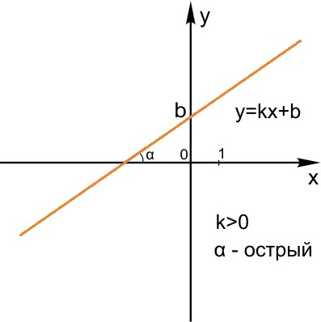

Графики функций |
|---|
Необходимая теория для решения №10 ЕГЭ профильной математики.Линейная функция.Определение линейной функцииЛинейная функция — функция вида y = x+b. График линейной функции — прямая. Для построения графика линейной функции достаточно двух точек — потому что через две несовпадающие точки всегда можно провести прямую, причем единственную. Величина k в формуле линейной функции y = kx+b называется угловым коэффициентом прямой.
0"> Если k<0, линейная функция убывает. Чем больше х, тем меньше у, то есть график идет вправо и вниз. Угловой коэффициент прямойУгловой коэффициент k равен тангенсу угла наклона графика линейной функции к положительному направлению оси Х. k= tgα . Пусть k>0. Чем больше k, тем круче вверх идет график функции.
А что же будет, если k=0? Мы получим горизонтальную прямую y = b. На рисунке показан график функции y = 3. Заметим, что прямая x = 3 (также изображенная на рисунке) не является графиком функции в нашем обычном, школьном смысле слова. В самом деле — мы помним, что функция — это соответствие между двумя множествами, причем каждому элементу множества Х соответствует один и только один элемент множества Y. Для прямой x = 3 это не выполняется: значению x = 3 соответствует бесконечно много значений у.
Если k1=k2, прямые параллельны. При этом, чем больше b, тем выше расположен на координатной плоскости график функции. Например, прямые y=4x+3 и y=4x+9 параллельны. Их угловые коэффициенты равны.
Если k1*k2=-1, прямые перпендикулярны. Например, прямые y=4x+3 и y=-0,25x-1 пересекаются под прямым углом. Произведение их угловых коэффициентов равно — 1.
Построение графика линейной функцииГрафик линейной функции построить легко, достаточно двух точек. Оказывается, что привычный нам вид уравнения прямой y=kx+b не единственно возможный. Уравнение прямой можно записать также в виде Ax + By + C = 0. Построим, например, прямую, заданную уравнением 3x + 4y - 12 = 0. При x = 0 получаем, что y = 3. При y = 0 получаем, что x = 4. Значит, наша прямая проходит через точки M (0; 3) и N (4; 0).
|
Линейная функцияЗадания №10 из ЕГЭ: линейная функция |

Информация о создателе:Сайт создан ученицей 10"Б" класса: Ксенией Куница.
|
|---|